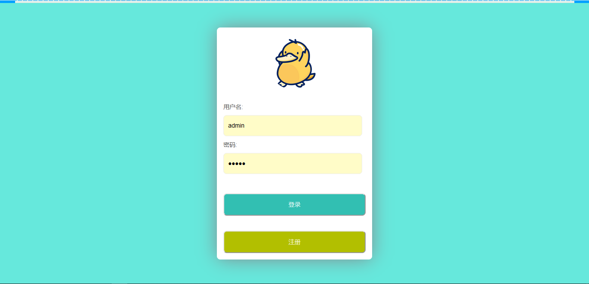
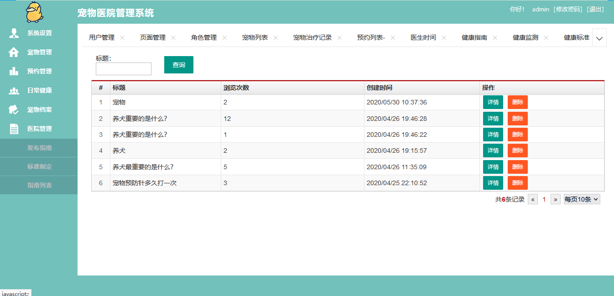
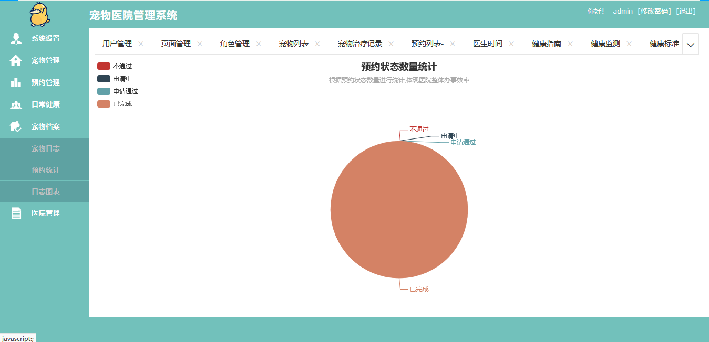
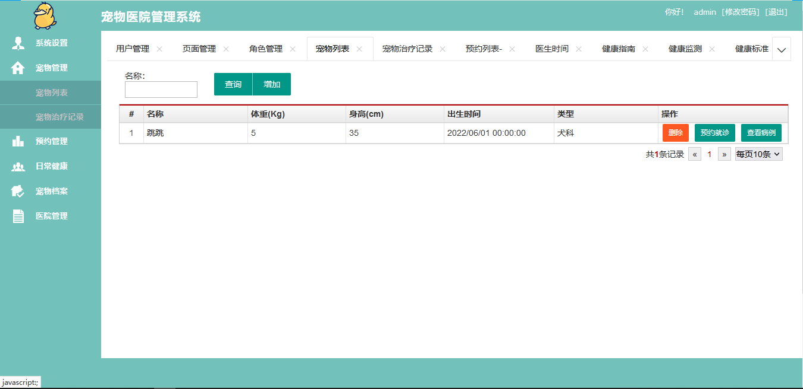
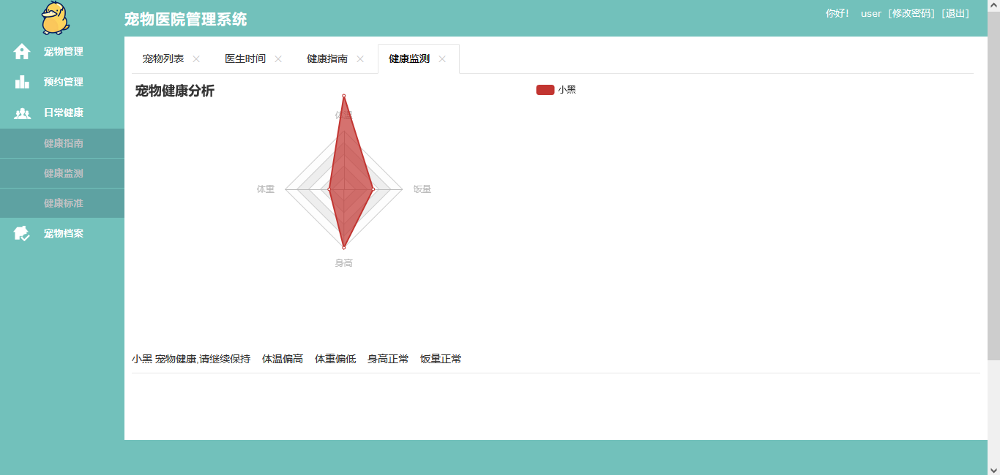
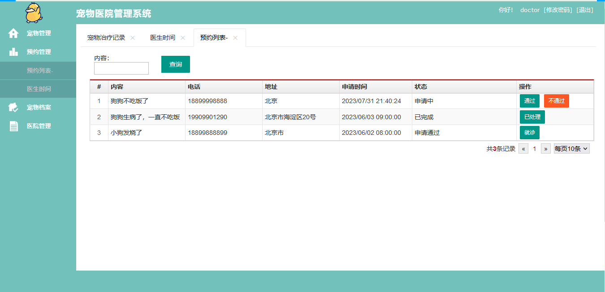

SpringBoot 宠物医院管理系统
一、项目介绍
176
宠物医院管理系统使用 SpringBoot+Mybatis 进行开发，系统分为管理员，医生和普通用户三种角色。
管理员主要功能如下：
-
用户管理
-
宠物管理
-
宠物治疗记录
-
预约就诊
-
查看病例
-
健康指南管理
-
健康监测
-
宠物日志
-
预约统计
-
发布指南
医生：
用户：
-
注册登录
-
宠物管理
-
预约就诊
-
查看病例
-
健康指南查看
-
宠物档案管理
二、技术框架
-
后端：SpringBoot，Mybatis
-
前端：layui，jquery，echarts
三、安装教程
-
用 idea 打开项目
-
在 idea 中配置 jdk 环境
-
配置 maven 环境并下载依赖
-
新建数据库，导入数据库文件
-
在 application.properties 文件中将数据库账号密码改成自己本地的
-
启动运行，浏览器输入
http://localhost:8080
即可访问。管理员账号密码 admin/123456，医生账号密码 doctor/123456，普通用户账号密码 user/123456。
四、项目截图





